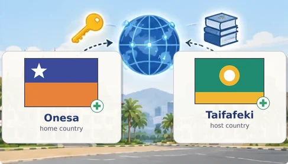

Keys and codes are shared
Before anyone travels, Onesa's signing keys and code systems reach the trust network, so a Taifafeki clinic can trust and read an Onesan record months later.
Before the pilgrimage season · Lomaru and WHO GDHCN · told through Onesa's health information exchange
P0 Keys and codes are shared

Onesa's HIE publishes the public keys it signs health documents with to the WHO GDHCN trust network, and shares the national code systems its IPS uses with the WHO Terminology Service. Nothing about Kamal yet: this is what lets a Taifafeki clinic trust and read an Onesan record months later. Step A of the overview of key process flows.
Not yet specified
- No business process or transaction for publishing keys or terminologies.
Policy point. Which Onesan institution signs health documents on behalf of the health sector, and who in Taifafeki decides to accept that signature?
Under the hood
What travels
- Carrier
- GDHCN trust network
- Payload
- Public signing keys (DSCs); national code systems
References
- SMART Trust framework (by reference) specified by
- User scenarios: the first two sections described in